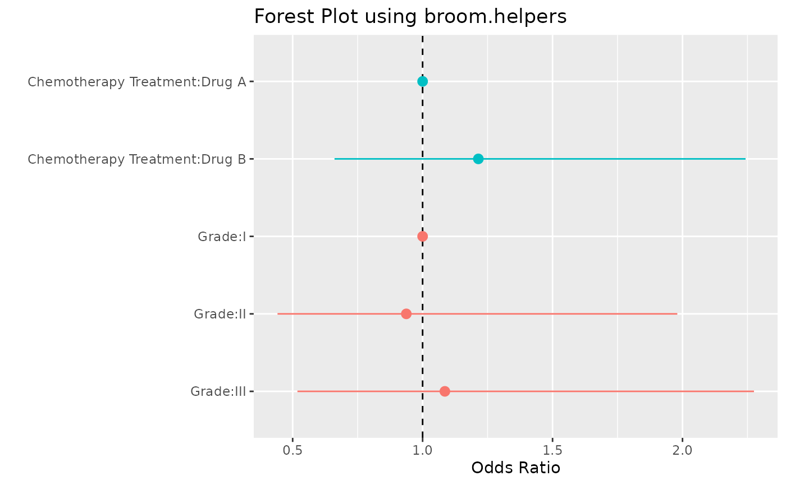

The broom.helpers package offers a suite of functions that make easy to interact, add information, and manipulate tibbles created with broom::tidy() (and friends).
The suite includes functions to group regression model terms by variable, insert reference and header rows for categorical variables, add variable labels, and more.
As a motivating example, let’s summarize a logistic regression model with a forest plot and in a table.
To begin, let’s load our packages.
library(broom.helpers)
library(gtsummary)
library(ggplot2)
library(dplyr)
# paged_table() was introduced only in rmarkdwon v1.2
print_table <- function(tab) {
if (packageVersion("rmarkdown") >= 1.2) {
rmarkdown::paged_table(tab)
} else {
knitr::kable(tab)
}
}Our model predicts tumor response using chemotherapy treatment and tumor grade. The data set we’re utilizing has already labelled the columns using the labelled package. The column labels will be carried through to our figure and table.
model_logit <- glm(response ~ trt + grade, trial, family = binomial)
broom::tidy(model_logit)
#> # A tibble: 4 × 5
#> term estimate std.error statistic p.value
#> <chr> <dbl> <dbl> <dbl> <dbl>
#> 1 (Intercept) -0.879 0.305 -2.88 0.00400
#> 2 trtDrug B 0.194 0.311 0.625 0.532
#> 3 gradeII -0.0647 0.381 -0.170 0.865
#> 4 gradeIII 0.0822 0.376 0.219 0.827To create the figure, we’ll need to add some information to the tidy tibble, i.e. we’ll need to group the terms that belong to the same variable, add the reference row, etc. Parsing this information can be difficult, but the broom.helper package has made it simple.
tidy_forest <-
model_logit %>%
# perform initial tidying of the model
tidy_and_attach(exponentiate = TRUE, conf.int = TRUE) %>%
# adding in the reference row for categorical variables
tidy_add_reference_rows() %>%
# adding a reference value to appear in plot
tidy_add_estimate_to_reference_rows() %>%
# adding the variable labels
tidy_add_term_labels() %>%
# removing intercept estimate from model
tidy_remove_intercept()
tidy_forest
#> # A tibble: 5 × 16
#> term variable var_label var_class var_type var_nlevels contrasts
#> <chr> <chr> <chr> <chr> <chr> <int> <chr>
#> 1 trtDrug A trt Chemotherapy T… character dichotom… 2 contr.trea…
#> 2 trtDrug B trt Chemotherapy T… character dichotom… 2 contr.trea…
#> 3 gradeI grade Grade factor categori… 3 contr.trea…
#> 4 gradeII grade Grade factor categori… 3 contr.trea…
#> 5 gradeIII grade Grade factor categori… 3 contr.trea…
#> # … with 9 more variables: contrasts_type <chr>, reference_row <lgl>,
#> # label <chr>, estimate <dbl>, std.error <dbl>, statistic <dbl>,
#> # p.value <dbl>, conf.low <dbl>, conf.high <dbl>Note: we used tidy_and_attach() instead of broom::tidy(). broom.helpers functions needs a copy of the original model. To avoid passing the model at each step, the easier way is to attach the model as an attribute of the tibble with tidy_attach_model(). tidy_and_attach() is simply a shortcut of model %>% broom::tidy() %>% tidy_and_attach(model).
We now have a tibble with every piece of information we need to create our forest plot using ggplot2.
tidy_forest %>%
mutate(
plot_label = paste(var_label, label, sep = ":") %>%
forcats::fct_inorder() %>%
forcats::fct_rev()
) %>%
ggplot(aes(x = plot_label, y = estimate, ymin = conf.low, ymax = conf.high, color = variable)) +
geom_hline(yintercept = 1, linetype = 2) +
geom_pointrange() +
coord_flip() +
theme(legend.position = "none") +
labs(
y = "Odds Ratio",
x = " ",
title = "Forest Plot using broom.helpers"
)
Note:: for more advanced and nicely formatted plots of model coefficients, look at GGally::ggcoef_model() and its dedicated vignette. GGally::ggcoef_model() internally uses broom.helpers.
In addition to aiding in figure creation, the broom.helpers package can help summarize a model in a table. In the example below, we add header and reference rows, and utilize existing variable labels. Let’s change the labels shown in our summary table as well.
tidy_table <-
model_logit %>%
# perform initial tidying of the model
tidy_and_attach(exponentiate = TRUE, conf.int = TRUE) %>%
# adding in the reference row for categorical variables
tidy_add_reference_rows() %>%
# adding the variable labels
tidy_add_term_labels() %>%
# add header row
tidy_add_header_rows() %>%
# removing intercept estimate from model
tidy_remove_intercept()
# print summary table
options(knitr.kable.NA = '')
tidy_table %>%
# format model estimates
select(label, estimate, conf.low, conf.high, p.value) %>%
mutate(across(all_of(c("estimate", "conf.low", "conf.high")), style_ratio)) %>%
mutate(across(p.value, style_pvalue)) %>%
print_table()Note:: for more advanced and nicely formatted tables of model coefficients, look at gtsummary::tbl_regression() and its dedicated vignette. gtsummary::tbl_regression() internally uses broom.helpers.
There is also a handy wrapper, called tidy_plus_plus(), for the most commonly used tidy_*() functions, and they can be executed with a single line of code:
model_logit %>%
tidy_plus_plus(exponentiate = TRUE)
#> # A tibble: 5 × 18
#> term variable var_label var_class var_type var_nlevels contrasts
#> <chr> <chr> <chr> <chr> <chr> <int> <chr>
#> 1 trtDrug A trt Chemotherapy T… character dichotom… 2 contr.trea…
#> 2 trtDrug B trt Chemotherapy T… character dichotom… 2 contr.trea…
#> 3 gradeI grade Grade factor categori… 3 contr.trea…
#> 4 gradeII grade Grade factor categori… 3 contr.trea…
#> 5 gradeIII grade Grade factor categori… 3 contr.trea…
#> # … with 11 more variables: contrasts_type <chr>, reference_row <lgl>,
#> # label <chr>, n_obs <dbl>, n_event <dbl>, estimate <dbl>, std.error <dbl>,
#> # statistic <dbl>, p.value <dbl>, conf.low <dbl>, conf.high <dbl>
model_logit %>%
tidy_plus_plus(exponentiate = TRUE) %>%
print_table()See the documentation of tidy_plus_plus() for the full list of available options.
broom.helpers can also handle different contrasts for categorical variables and the use of polynomial terms for continuous variables.
When polynomial terms of a continuous variable are defined with stats::poly(), broom.helpers will be able to identify the corresponding variable, create appropriate labels and add header rows.
model_poly <- glm(response ~ poly(age, 3) + ttdeath, na.omit(trial), family = binomial)
model_poly %>%
tidy_plus_plus(
exponentiate = TRUE,
add_header_rows = TRUE,
variable_labels = c(age = "Age in years")
) %>%
print_table()By default, categorical variables are coded with a treatment contrasts (see stats::contr.treatment()). With such contrasts, model coefficients correspond to the effect of a modality compared with the reference modality (by default, the first one). tidy_add_reference_rows() allows to add a row for this reference modality and tidy_add_estimate_to_reference_rows() will populate the estimate value of these references rows by 0 (or 1 if exponentiate = TRUE). tidy_add_term_labels() is able to retrieve the label of the factor level associated with a specific model term.
model_1 <- glm(
response ~ stage + grade * trt,
gtsummary::trial,
family = binomial
)
model_1 %>%
tidy_and_attach(exponentiate = TRUE) %>%
tidy_add_reference_rows() %>%
tidy_add_estimate_to_reference_rows(exponentiate = TRUE) %>%
tidy_add_term_labels() %>%
print_table()Using stats::contr.treatment(), it is possible to defined alternative reference rows. It will be properly managed by broom.helpers.
model_2 <- glm(
response ~ stage + grade * trt,
gtsummary::trial,
family = binomial,
contrasts = list(
stage = contr.treatment(4, base = 3),
grade = contr.treatment(3, base = 2),
trt = contr.treatment(2, base = 2)
)
)
model_2 %>%
tidy_and_attach(exponentiate = TRUE) %>%
tidy_add_reference_rows() %>%
tidy_add_estimate_to_reference_rows(exponentiate = TRUE) %>%
tidy_add_term_labels() %>%
print_table()You can also use sum contrasts (cf. stats::contr.sum()). In that case, each model coefficient corresponds to the difference of that modality with the grand mean. A variable with 4 modalities will be coded with 3 terms. However, a value could be computed (using emmeans::emmeans()) for the last modality, corresponding to the difference of that modality with the grand mean and equal to sum of all other coefficients multiplied by -1. broom.helpers will identify categorical variables coded with sum contrasts and could retrieve an estimate value for the reference term.
model_3 <- glm(
response ~ stage + grade * trt,
gtsummary::trial,
family = binomial,
contrasts = list(
stage = contr.sum,
grade = contr.sum,
trt = contr.sum
)
)
model_3 %>%
tidy_and_attach(exponentiate = TRUE) %>%
tidy_add_reference_rows() %>%
tidy_add_estimate_to_reference_rows(exponentiate = TRUE) %>%
tidy_add_term_labels() %>%
print_table()
#> Loading required namespace: emmeansOther types of contrasts exist, like Helmert (contr.helmert()) or polynomial (contr.poly()). They are more complex as a modality will be coded with a combination of terms. Therefore, for such contrasts, it will not be possible to associate a specific model term with a level of the original factor. broom.helpers will not add a reference term in such case.
model_4 <- glm(
response ~ stage + grade * trt,
gtsummary::trial,
family = binomial,
contrasts = list(
stage = contr.poly,
grade = contr.helmert,
trt = contr.poly
)
)
model_4 %>%
tidy_and_attach(exponentiate = TRUE) %>%
tidy_add_reference_rows() %>%
tidy_add_estimate_to_reference_rows(exponentiate = TRUE) %>%
tidy_add_term_labels() %>%
print_table()Below is a summary of the additional columns that may be added by a broom.helpers function. The table includes the column name, the function that adds the column, and a short description of the information in the column.
| Column | Function | Description |
|---|---|---|
original_term |
Original term before disambiguation. This columns is added only when disambiguation is needed (i.e. for mixed models). |
|
variable |
String of variable names from the model. For categorical variables and polynomial terms defined with |
|
var_class |
Class of the variable. |
|
var_type |
One of 'intercept', 'continuous', 'dichotomous', 'categorical', 'interaction', 'ran_pars' or 'ran_vals' |
|
var_nlevels |
Number of original levels for categorical variables |
|
contrasts |
Contrasts used for categorical variables. |
|
contrasts_type |
Type of contrasts ('treatment', 'sum', 'poly', 'helmert', 'other' or 'no.contrast') |
|
reference_row |
Logical indicating if a row is a reference row for categorical variables using a treatment or a sum contrast. Is equal to |
|
var_label |
String of variable labels from the model. Columns labelled with the |
|
label |
String of term labels based on (1) labels provided in |
|
header_row |
Logical indicating if a row is a header row for variables with several terms. Is equal to |
|
n_obs |
Number of observations |
|
n_event |
Number of events (for binomial and multinomial logistic models, Poisson and Cox models) |
|
exposure |
Exposure time (for Poisson and Cox models) |
Note: tidy_add_estimate_to_reference_rows() does not create an additional column; rather, it populates the ‘estimate’ column for reference rows.
Below is a list of additional attributes that broom.helpers may attached to the results. The table includes the attribute name, the function that adds the attribute, and a short description.
| Attribute | Function | Description |
|---|---|---|
exponentiate |
Indicates if estimates were exponentiated |
|
coefficients_type |
Type of coefficients |
|
coefficients_label |
Coefficients label |
|
variable_labels |
Custom variable labels passed to |
|
term_labels |
Custom term labels passed to |
|
N_obs |
Total number of observations |
|
N_event |
Total number of events |
|
Exposure |
Total of exposure time |
| Model | Notes |
|---|---|
|
|
Limited support. It is recommanded to use |
|
|
|
Limited support for categorical variables |
|
|
|
|
|
|
|
Use default tidier |
|
Limited support. If |
|
Limited support for models with nominal predictors. |
|
Limited support for models with nominal predictors. |
|
|
|
Reference rows are not relevant for such models. |
|
Limited support |
|
|
|
|
|
Limited support. It is recommanded to use |
Note: this list of models has been tested. broom.helpers may or may not work properly or partially with other types of models. Do not hesitate to provide feedback on GitHub.